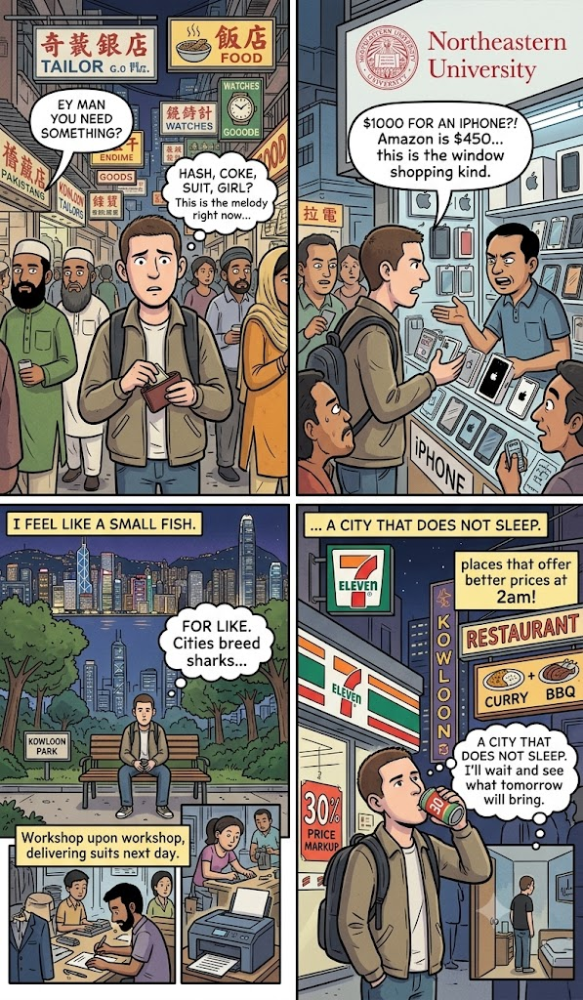

Hong Kong in a Day
Originally written December 2011 • Uploaded to Facebook Dec 13, 2011, 8:19 AM

Hash, coke, suit, girl? This is the relentless street melody of Hong Kong for me right now. It is a far cry from the typical blaring car horns and aggressive pavement hawkers defining the rest of mainland China, though I am not entirely certain if this brand of street traffic is any better. Sitting a brief two hours away from Guangzhou and maybe an hour and a half from the manufacturing hub of Shenzhen, Hong Kong feels fundamentally different—yet, underneath the surface, it remains intimately tied to them both. If anything, the street level reminds me far more of Bangkok or Delhi, characterized by dense swarms of street brokers trying desperately to sell you things you don't actually need, alongside street hostesses who don't really need you either.
Scanning the dense crowds, I trace the usual million Chinese faces. Sure, given the local wealth, some of these faces have clearly undergone a bit of cosmetic refinement, but structurally they remain familiar. On the other hand, the urban landscape is tightly packed with distinct immigrant communities that look nothing like your standard Western backpackers. Two primary groups dominate the blocks here. First, there are thousands of Pakistani and Indian merchants, many sporting traditional *shalwar kameez*, crisp white skullcaps, and long, manicured Muslim beards. I am not entirely certain if they are all deeply devout, but the massive prominent mosque rising right over the avenue, flanked by infinite neon signs for halal restaurants, strongly suggests it. Interestingly, there are virtually no women visible among them on the pavement; who knows if they simply keep their families entirely enclosed at home. These brokers primarily hustle two distinct lines of inventory: "Hash or a tailored suit, best price my friend!"
Then, you navigate around an assorted population of African traders who, from what I gather, journey to Hong Kong explicitly to buy cheap electronic components and wholesale apparel to export back to their home markets. It is a hustle not wildly different from what I’ve attempted myself, truth be told. These guys also move down the lane completely unaccompanied by women, typically drifting in packs of two or three wearing oversized, hip-hop-inspired streetwear. Most of them strongly resemble the illicit brokers who haunt the dark corners of Beijing trying to flip hashish, but here they lean close to whisper about local massages, girls, and more importantly, counterfeit luxury watches. There are dozens of them stationed strategically on street corners, inside recessed doorways, and marking major pedestrian crossings, simply waiting to utter that universal phrase: *"Hey man, you need something?"*
The deepest structural similarity to Bangkok and Delhi is that inside Hong Kong, you can successfully acquire virtually anything on earth, provided you know where to deploy your cash—whether through perfectly legitimate storefronts or deeply illicit backrooms. I arrived in the territory incredibly excited because I had heard the retail ecosystem was legendary. It is, but for a budget traveler like me, it functions strictly as high-end window shopping. There are glitzy mega-boutiques stacked shoulder-to-shoulder without end, and then, bizarrely, there are entire layers of secondary stores and hidden markets stacked for stories right above those ground-level shops. Back in the mainland, I always have the security blanket of haggling prices down to a baseline, knowing that if a vendor refuses to bend, I can just log onto Taobao and buy it digitally without risking my sanity, my wallet, or my limbs. Here on these island avenues, I feel like a very small fish dropped into a vast ocean, mimicking the exact vulnerability I felt in New York City. Dense metropolitan centers naturally breed the kind of sharks that excel at preying on guys like me—suckers for slick gadgets, flashy streetwear, and a cheap plate of authentic chicken curry.
The sheer velocity of consumer goods can make it difficult to focus. I catch myself wondering if my life would be measurably improved by possessing that luxury watch, that advanced camera lens, or that flashing electronic toy—or if I’m just looking for a heavy plate of juicy local barbecue in my stomach. For instance, I set out to scout for an iPhone, given that smartphones are heavily taxed and ridiculously expensive back in mainland China. Hearing that Hong Kong was a duty-free haven for electronics, I began interrogating local merchants. After asking around, the absolute best price I could extract was roughly $1,000—which sits at a staggering $450 premium over the standard retail price tag on Amazon or major US distributors. I suppose I could attempt to haggle them down further, but it became glaringly obvious that the best bargains are not to be extracted here, but back in the States. This reality check applied to almost every luxury item I’ve fancied since crossing the border; with costs tracking this high, I feel victorious if I’m not overpaying by 30% just to grab a cold bottle of beer inside a local 7-Eleven.
One undeniably phenomenal characteristic of Hong Kong, however, is the pervasive sense that the city never actually sleeps. Sure, the main street-level tailoring shops eventually close their security grates, and the watch and hash brokers clear off the corners. But take a quiet midnight stroll deep into the labyrinth of the high-rises where I am staying, and you uncover hidden, frantic workshops humming with activity. Tailors are sewing furiously to deliver custom three-piece suits for next-day pickup, while high-speed presses run off thousands of print copies for the next morning's massive district sales. Fortunately, my tiny, closet-sized room remains completely quiet. If I step back down onto the pavement at 2:00 AM, I pass multiple restaurants that don't even bother posting closing hours—venues that actually introduce *better* menu prices in the dead of night. And I'm not talking about standard two-for-one buckets of greasy slop either; you can pull up a stool and order fresh sushi, gourmet burgers, aromatic curries, and open-fire barbecue before dawn.
Right here in my immediate neighborhood of Kowloon, a small urban park sits tucked quietly behind the towering retail blocks. Around 8:00 PM tonight, the paths were still completely packed with locals running laps, executing calisthenics, and chatting animatedly in the evening air. As I try to drift off to sleep inside my cramped quarters, my mind keeps looping back to the people who inhabit this vertical island. I wonder how they actually choose to deploy their scarce spare time. Do they spend their weekends endlessly cycling through these identical luxury malls? Do they actively haggle with international expats over the margins of a custom suit? Do they stand on the asphalt slamming cheap beers outside a neon-lit 7-Eleven like the rest of us drifters, or do they quietly sip premium cocktails on private garden terraces atop the skyscrapers? I don't really know what else to conclude about this landscape, outside of the fact that it possesses an absolutely staggering skyline and beautiful, sweeping views from across the harbor. I guess I’ll just have to wait and see what tomorrow brings.